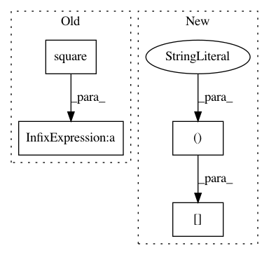

ce96b03b07a4a4bdd851aa84493c616cd291aff2,rllib/examples/env/mbmpo_env.py,HopperWrapper,reward,#HopperWrapper#Any#Any#Any#,39
Before Change
assert obs.ndim == 2 and action.ndim == 2
assert obs.shape == obs_next.shape and action.shape[0] == obs.shape[0]
vel = obs_next[:, 5]
ctrl_cost = 1e-3 * np.sum(np.square(action), axis=1)
reward = vel + alive_bonus - ctrl_cost
return np.minimum(np.maximum(-1000.0, reward), 1000.0)
After Change
// reward values).
a = np.clip(action, -self.max_torque, self.max_torque)[0]
costs = self.angle_normalize(theta) ** 2 + \
0.1 * obs[:, 2] ** 2 + 0.001 * (a ** 2)
return -costs
@staticmethod
In pattern: SUPERPATTERN
Frequency: 3
Non-data size: 4
Instances
Project Name: ray-project/ray
Commit Name: ce96b03b07a4a4bdd851aa84493c616cd291aff2
Time: 2020-10-06
Author: sven@anyscale.io
File Name: rllib/examples/env/mbmpo_env.py
Class Name: HopperWrapper
Method Name: reward
Project Name: GPflow/GPflow
Commit Name: acc533ac66fa4d19420a36006ece53a440d03761
Time: 2018-11-05
Author: art.art.v@gmail.com
File Name: gpflow/covariances/kuus.py
Class Name:
Method Name: _Kuu
Project Name: GPflow/GPflow
Commit Name: bd1e9c04b48dd5ccca9619d5eaa2595a358bdb08
Time: 2020-01-31
Author: st--@users.noreply.github.com
File Name: gpflow/kernels/misc.py
Class Name: Coregion
Method Name: K_diag